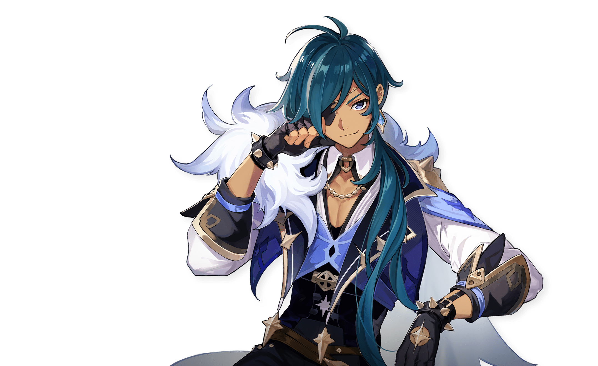

Pictures

Features
A short title
A small image or thumbnail
A one‑sentence description
A “Read more” button that expands an extra paragraph right on the same page
A Cryo main in Genshin Impact focuses on leveraging the Cryo element's unique strengths, such as freezing enemies with Hydro reactions for crowd control or amplifying damage via Melt and Superconduct. Top Cryo DPS picks like Ayaka, Ganyu, or Wriothesley excel at delivering high burst output, especially in Freeze or Melt teams paired with supports like Shenhe or Kazuha for buffs. Cryo Resonance boosts crit rate against affected foes, making it ideal for endgame content like Spiral Abyss.

This page is a fun mix of gaming content and personal projects, showing how I balance strategy in games and life. It’s a space where you’ll see my favorite game‑related work—like mods, builds, and gameplay systems—alongside real‑world creations that reflect the same attention to planning, problem‑solving, and creativity. Whether it’s designing a game mechanic or tackling a coding or design challenge offline, I approach everything with the mindset of turning raw ideas into something structured, playable, and meaningful.
A short title
A small image or thumbnail
A one‑sentence description
A “Read more” button that expands an extra paragraph right on the same page
“This website gives a great mix of Genshin strategy and personality. Really useful for Cryo mains looking for team ideas.” — Player A
“The layout is clean and easy to navigate. I love the hero section and the feature images.” — Player B
A Cryo main focuses on Cryo‑element characters and builds teams around Freeze, Melt, and Superconduct reactions.
Use elemental reactions with Electro, Pyro, and Hydro to bypass Cryo immunity and control the battlefield.
AOS (Animate on Scroll) makes sections appear smoothly as you scroll, improving visual flow and UX.
Got a question, idea, or just want to chat? Drop me a message and I’ll reply when I’m back from the game or the grind!